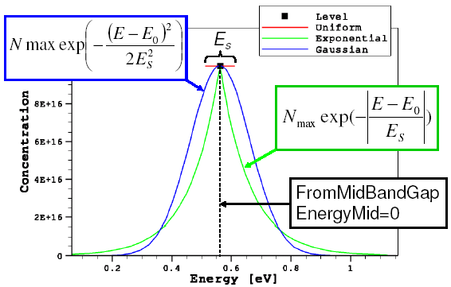
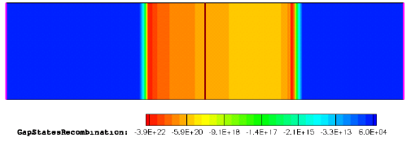
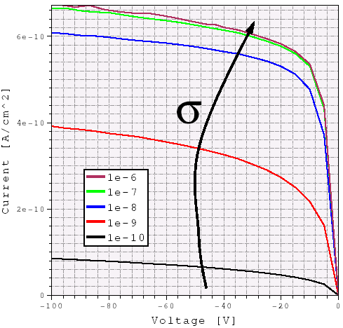

Sentaurus Device
13. Special Focus: Traps
13.1 Trap Types
13.2 Defining Traps
13.3 Types of Trap Density-of-States
13.4 Trap Spatial Distribution
13.5 Trap Occupation
13.6 Trap Cross-Section
13.7 Trap as Doping
13.8 Trap Fill Controls
13.9 Trap Visualization
Objectives
- To demonstrate how to work with traps in simulations using Sentaurus Device.
13.1 Trap Types
Traps are very important physical quantities that can drastically affect the electrical performance of a device. They act similarly to dopings, supplying free carriers, enhancing recombination, increasing leakage, and (when charged) also contributing to a total charge in the right-hand side of the Poisson equation, thereby influencing device electrical behavior.
In Sentaurus Device, different trap objects are considered:
- Rechargeable bulk and interface traps, energetically distributed inside a semiconductor or an insulator material band gap
- Fixed charges, distributed inside an insulator bulk material or at arbitrary material interfaces
For rechargeable traps, two trap types are available:
- An Acceptor (or eNeutral) trap that is uncharged when unoccupied and becomes negatively charged when capturing an electron.
- A Donor (or hNeutral) trap that is uncharged when unoccupied and becomes positively charged when capturing a hole.
For both trap types, electron–hole recombination through such a trap is allowed.
There is no default trap type. Therefore, you must specify a trap type explicitly.
Another available species is the fixed charge, which is a trap fully occupied by either electrons or holes. Therefore, its charge stays constant throughout the entire simulation and does not depend on electrical bias conditions. Electron–hole recombination through such a trap is not allowed. This type of trap uses the FixedCharge keyword for a trap specification.
Both rechargeable and fixed-charge traps can be specified at the bulk or at any material interface.
13.2 Defining Traps
Traps can be defined globally, materialwise, regionwise, or interface-wise.
The following template shows the materialwise definition of a bulk trap:
Physics (Material="<material_name>") {
Traps(
( <trap_type> Conc=<value>
[<trap_DOS_type>
<trap_cross_section>
<trap_tunneling_parameters>])
(...)
)
}
where Conc represents a trap concentration. Other trap-related parameters are explained later. As many traps as needed can be specified inside a single Traps section.
In the case of a bulk trap, its concentration is given in cm-3 or cm-3 eV-1. For interface traps, it is given in cm-2 or cm-2 eV-1, depending on the type of trap density-of-states (see Section 13.3 Types of Trap Density-of-States).
Here is an example of the global specification of a rechargeable bulk trap:
Physics {
Traps(
(eNeutral Level fromMidBandGap EnergyMid=0.
Conc=1e15 eXsection=1e-10 hXsection=1e-10)
)
}
Similar syntax is applied for an interface trap specification:
Physics (MaterialInterface= "<Material_1>/<Material_2>" ) {
Traps(
( <trap_type> Conc=<value>
[<trap_DOS_type>
<trap_cross_section>
<trap_tunneling_parameters>])
(...)
)
}
The following example shows the typical syntax for an interface fixed-charge trap specification at material interfaces:
Physics (MaterialInterface= "Silicon/Oxide" ) {
Traps (FixedCharge Conc=-1e11)
}
For the FixedCharge trap type, the sign of Conc denotes the sign of the fixed charges.
13.3 Types of Trap Density-of-States
The trap energy distribution inside a material band gap is defined in the Traps section by specifying any of the available trap density-of-states (DOS):
- Level represents a single-energy trap level at a predefined EnergyMid position. Trap concentration is given in cm-3 (bulk traps) or cm-2 (interface traps).
- Uniform represents a uniformly energy-distributed trap inside a material band gap, controlled by the energy reference point, EnergyMid and EnergySig parameters. Trap concentration is given in cm-3 eV-1 (bulk traps) or cm-2 eV-1 (interface traps).
- Exponential represents an exponentially energy-distributed trap inside a material band gap, controlled by the energy reference point, EnergyMid and EnergySig parameters. Trap concentration is given in cm-3 eV-1 (bulk traps) or cm-2 eV-1 (interface traps).
- Gaussian represents a Gaussian energy-distributed trap inside a material band gap, controlled by the energy reference point, EnergyMid and EnergySig parameters. Trap concentration is given in cm-3 eV-1 (bulk traps) or cm-2 eV-1 (interface traps).
- Table specifies a tabular trap energy distribution. Trap concentration is given in cm-3 eV-1 (bulk traps) or cm-2 eV-1 (interface traps).
There is no default trap DOS type. Therefore, you must specify it explicitly.
The following example shows the trap energy distribution–related syntax:
Traps( (... <trap_DOS_type> <energy_reference_point> EnergyMid=<E0> EnergySig=<Es> ) )
For the energy reference point, any of the following keywords can be used:
- FromConBand selects a material conduction band edge as a reference point.
- FromValBand selects a material valence band edge as a reference point.
- FromMidBandGap selects the middle of a semiconductor material band gap as a reference point.
The following example defines the eNeutral level-type trap located exactly in the middle of a material band gap:
Physics {
Traps(
(eNeutral Level fromMidBandGap EnergyMid=0.
Conc=1e15 eXsection=1e-10 hXsection=1e-10)
)
}
The complete project that demonstrates different definitions of trap DOS types can be investigated from within Sentaurus Workbench in the directory Applications_Library/GettingStarted/sdevice/Traps/TrapDOS.
Click to view the primary file sim1_des.cmd.
This file shows how different trap DOS specifications can be activated, where the DOS project parameter is used to select a trap DOS type.
To plot the trap density versus energy distribution, the TrappedCarDistrPlot section is used in the project. In this section, you must specify the exact locations of traps within a material or region, where the trap data will be plotted:
TrappedCarDistrPlot {
Material="Silicon"{(0. 0.)}
}
Figure 1 shows the results of this command.

Figure 1. Trap DOS energy distributions for different definitions of trap DOS.
13.4 Trap Spatial Distribution
By default, traps are distributed uniformly inside a material or at a material interface. You can have a spatially nonuniformly distributed trap profile by introducing the SFactor specification inside the Trap section of the command file:
Traps( (... SFactor= "<dataset_name>") )
Here, <dataset_name> indicates the external data field on which the trap spatial nonuniformity is based.
Limited dataset names are allowed in the SFactor specification, such as DeepLevels, xMoleFraction, and yMoleFraction (read from the doping file), eTrappedCharge and hTrappedCharge (read from the file specified by DevFields in the File section), or PMI user fields PMIUserField0...10 (read from the file specified by PMIUserFields in the File section).
Now look at the corresponding Sentaurus Workbench project, which can be found in the directory Applications_Library/GettingStarted/sdevice/Traps/TrapSpatial.
It represents the concept of how to introduce a nonuniform 2D spatial trap distribution. The project involves Sentaurus Structure Editor and Sentaurus Device.
Sentaurus Structure Editor defines the device geometry and doping profile. In addition, it defines the nonuniformly distributed function, called DeepLevels. Mesh generation is performed inside Sentaurus Structure Editor by directly calling Sentaurus Mesh.
Sentaurus Device defines the nonuniform traps, applying the SFactor specification to the trap definition, which refers to the DeepLevels dataset name.
Click to view the primary file sim1_des.cmd.
The DeepLevels dataset name is taken from the Grid file, which is specified in the File section, while trap_type and conc are the project parameters:
File {
grid = "@tdr@"
... }
Physics {
Traps(
(@trap_type@ Conc=@conc@ SFactor="DeepLevels")
)
}
Two values are assigned to the conc parameter: 0 and \(10^{18}\). Having the conc parameter value set to zero indicates to Sentaurus Device that the specified dataset determines the spatial distribution directly. For a nonzero conc parameter value, the resulting distribution is scaled according to the following formula:
\[N_{\text"trap"}(x,y) = \text"conc" · {\text"DeepLevels"(x,y)} / {\text"DeepLevels"(\text"max")} \]
where \(\text"DeepLevels"(\text"max")\) refers to the DeepLevels dataset peak value.
Figure 2 shows the resulting trapped hole concentration profiles.
{kind=link}
Figure 2. Trapped hole density distributions plotted for (left) conc=0 and (right) conc=1e18 trap specifications. (Click image for full-size view.)
The following syntax illustrates the definition of an acceptor-type interface trap spatial distribution, based on the PMIUserField0 dataset, loaded from the external abc.tdr file:
File {
...
PMIUserFields = "abc.tdr"
}
Physics(MaterialInterface="Silicon/Oxide"){
Traps(
Acceptor Conc=1e11 Gaussian fromMidBandGap EnergyMid=0. EnergySig=0.1
SFactor="PMIUserField0"
)
}
13.5 Trap Occupation
Trap occupation is controlled by a trap-energy distribution, doping, and bias conditions, which define a carrier quasi-Fermi-level location inside a semiconductor band gap. It dynamically changes due to carrier capture or emission by or from a trap. As previously mentioned, Sentaurus Device allows you to plot a trap-energy distribution and occupation using the TrappedCarDistrPlot section in the input.
The specification inside the TrappedCarDistrPlot section defines a trap spatial location within a specified material, at which a trap distribution or occupation must be plotted. Resulting trapped charge density, trap occupation probability, and trap density quantities as functions of energy are saved in a file indicated by the keyword TrappedCarPlotFile in the File section.
The Applications_Library/GettingStarted/sdevice/Traps/TrapOccupation project demonstrates the consequence of varying the Gaussian DOS trap-level peak position inside the silicon material band gap.
Click to view the primary file sim1_des.cmd.
The quasi-Fermi-level position is established by the uniformly distributed p-type doping with a concentration of 1017 cm–3. The eNeutral trap-type energy position within the band gap is controlled by the shift parameter, whose value varies between -0.4 eV and 0.3 eV, having the silicon mid–band gap as a reference point:
Physics {
...
Traps(
(@trap_type@ Gaussian fromMidBandGap
Conc=1e17 EnergyMid=@shift@ EnergySig=0.1
eXsection=1e-8 hXsection=1e-8)
)
}
Figure 3 shows the resulting trap-density energetic distributions. Figure 4 shows the corresponding trapped charge densities as well as their occupation probability as a function of energy. The corresponding electron quasi-Fermi-level position is indicated by a vertical green line.
{kind=link}
Figure 3. Trap density variations in energy space for different energy-peak displacement values, which move the trap-energy reference point from the mid–band gap towards the conduction or valence band edges. (Click image for full-size view.)

Figure 4. Trapped charge-density variations in energy space corresponding to above shown trap densities. The trap occupation probability is indicated by black-dotted curve and is established by the quasi-Fermi-level position (vertical green line). As can be seen, shallower traps capture more carriers than traps located far away from the valence band edge. (Click image for full-size view.)
13.6 Trap Cross-Section
The trap cross-section is the key parameter that defines the charge-trapping dynamics and the carrier recombination rate through a trap. The effective trap time constant (the time required for a single-trapping or de-trapping event) can be estimated as:
\[ τ_{\text"eff"} = {1}/{N_t \ v_{\text"th"}·σ} \]
where \(N_t\) is the trap level concentration, \(v_{\text"th"}\) is the thermal velocity, and \(σ\) is the trap cross-section.
For example, for \(N_t = 10^{17}\) cm-3, \(v_{\text"th"} = 2·10^7\) cm/s, and \(σ = 10^{-14}\) cm-2, the estimated trap lifetime \(τ_{\text"eff"}\) is \(5·10^{-11}\) s.
While in the case of a transient simulation, the carrier trap capture and emission are described by the detailed balance equation, under the steady-state assumption, the net carrier recombination through a single trap level is represented as:
\[ R_{\text"net"} = {N_0\ v_{\text"th"}^n\ v_{\text"th"}^p\ σ_n\ σ_p ( np - n_{i,\text"eff"}^2 )}/ {v_{\text"th"}^n\ σ_n ( n+n_1/g_n)+v_{\text"th"}^p\ σ_p ( p+p_1/g_p)} \]
where \(N_0\) denotes the trap concentration, and the \(n\) and \(p\) indexes correspond to electrons and holes.
Assuming equal electron and hole trap cross-sections and unit degeneration factors \(g_n = g_p = 1\), the above formula can be represented in a form of the well-known SRH approximation:
\[ R_{\text"net"}^{\text"SRH"} = {np-n_{i,\text"eff"}^2}/{τ_p (n + n_1) + τ_p (p + p_1)} \]
where \(τ_n\) and \(τ_p\) represent effective carrier lifetimes, and the \(n_1\) and \(p_1\) parameters implicitly take a trap-level energy into consideration.
The Applications_Library/GettingStarted/sdevice/Traps/TrapRecombination project demonstrates the influence of the trap cross-section value on a p-n junction leakage current under reverse bias condition. The trap cross-section for a specified eNeutral trap is varied as the Xsec project parameter.
Click to view the primary file sim1_des.cmd.
Under the reverse bias condition, the p-n junction is fully depleted of carriers, thereby resulting in a strong carrier generation inside the depleted region (see Figure 5). This causes the higher leakage current in the case of a higher trap cross-section value, as shown in Figure 6.

Figure 5. Gap-state recombination rate distribution inside a p-n junction structure, taken at –100 V bias. Negative recombination rate values represent the carrier generation.

Figure 6. Reverse diode I–Vs calculated with different bulk trap cross-section values. Higher leakage is observed for the higher trap cross-section.
The highest recombination through a trap level is achieved if a trap is positioned in the middle of the semiconductor material band gap, where the electron- or hole-capturing probabilities are the highest.
13.7 Trap as Doping
Charged traps also act like scattering centers (similar to doping), so their influence on carrier kinetics must be accounted for when using doping-dependent carrier mobility. To add a trap to the doping concentrations, specify the keyword Add2TotalDoping in the Trap section in combination with an appropriate mobility-doping dependency model, for example:
Physics {
Mobility( DopingDep ) * turns on mobility doping dependency
Traps(
( Donor * electron trap level (synonym of eNeutral)
...
Add2TotalDoping
)
)
}
The Applications_Library/GettingStarted/sdevice/Traps/Trap2Doping project demonstrates how this option activation affects carrier mobility.
Click to view the primary file sdevice_des.cmd.
Figure 7 illustrates the hole mobility dependency on doping concentration, having different combinations of doping and trap specifications.
{kind=link}
Figure 7. Hole bulk-mobility variation with different combinations of doping and trap specifications. In all cases, the 1e18 cm-3 donor trap concentration is defined. (Click image for full-size view.)
13.8 Trap Fill Controls
Under certain circumstances, it can be useful to define a trap occupancy explicitly. Sentaurus Device provides such a capability using trap fill controls, which use an explicit way to specify a trap occupation. Trap fill controls are specified in the Solve section, for example:
Solve {
Set (TrapFilling=Empty)
Quasistationary {...}
UnSet (TrapFilling)
Transient {...}
}
In this example, the first Set statement sets all traps as empty (not charged). After the Quasistationary simulation, the UnSet (TrapFilling) statement releases all traps to their actual state, which are used in the subsequent Transient simulation.
The available trap fill controls are:
- Set (TrapFilling=Full) sets all traps as fully occupied.
- Set (TrapFilling=Empty) sets all traps as empty.
- Set (TrapFilling=0) provides a trap occupation for the n=p=0 condition.
- Set (TrapFilling=n), Set (TrapFilling=p) sets a trap occupation to be in equilibrium with a very high n(p) concentration and zero p(n) concentration.
- Set (TrapFilling=Frozen) provides unchanged (from previous step) trap occupation.
- UnSet (TrapFilling) resets any of these controls and switches on the regular trap-filling dynamics.
The Applications_Library/GettingStarted/sdevice/Traps/FillControls project demonstrates the consequence of using different trap fill controls.
Click to view the primary file sim1_des.cmd.
13.9 Trap Visualization
To visualize trap-related quantities in Sentaurus Visual, the following keywords can be specified in the Plot section of the Sentaurus Device command file:
Plot {
eTrappedCharge * plots electron concentration trapped on eNeutral
* and Acceptor traps
hTrappedCharge * plots hole concentration trapped on hNeutral
* and Donor traps
eInterfaceTrappedCharge * plots electron concentration trapped in eNeutral
* and Acceptor interface traps
hInterfaceTrappedCharge * plots hole concentration trapped in hNeutral and
* Donor interface traps
TotalTrapConcentration * plots total bulk trap concentration
TotalTrapConcentration/RegionInterface * plots the absolute value of the net
interface trap concentration; does
not account for trap occupancy
eTrapConcentration * plots absolute value of bulk trap concentration
for eNeutral and Acceptor traps
hTrapConcentration * plots absolute value of bulk trap concentration
for hNeutral and Donor traps
TotalInterfaceTrapConcentration * plots total interface trap concentration;
stored as a bulk quantity with a nonzero
value only on interfaces
TrapConcPerEntry * plots trap concentrations for each energy level
of each trap entry specified in the command file;
also stores integrated trap concentration (summed
over all energy levels for given trap entry)
eGapStatesRecombination * plots electron recombination rate through traps
hGapStatesRecombination * plots hole recombination rate through traps
}
The eTrappedCharge and hTrappedCharge datasets include the contribution of interface charges as well. To this end, Sentaurus Device converts the interface densities to volume densities and, therefore, their contribution depends on the mesh spacing. To plot interface charges separately as interface densities, use eTrappedCharge/RegionInterface and hTrappedCharge/RegionInterface.
For the visualization of the trapped carrier charge density, the trap occupancy probability, and the trap density distribution in energy space, see Section 13.5 Trap Occupation for details.
Copyright © 2022 Synopsys, Inc. All rights reserved.